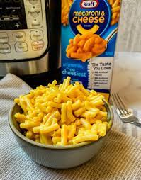

Mac's Famous Mac and Cheese

Ingredients Needed for this recipe:
- 1-1/2 qt. (6 cups) water
- 1 pkg. (7-1/4 oz.) KRAFT Macaroni & Cheese Dinner
- 1/4 cup margarine, cut up
- 1/4 cup milk
Instructions for cooking Mac's famous and Cheese
- Bring water to boil in medium saucepan. Add Macaroni; cook 7 to 8 min. or until tender, stirring occasionally.
- Drain. (Do not rinse.) Return macaroni to pan.
- Add margarine, milk and Cheese Sauce Mix; mix well.